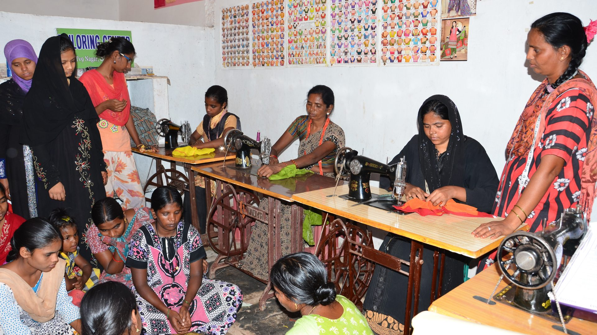

Our Impact - Gallery
Welcome to the Navi Swam Dish Foundation Gallery. Here you can explore moments captured from our work in the community — showing the hope, joy, and progress our programs bring.
From education and health camps to food drives and women empowerment, these images tell the story of lives touched and changed.
Education for Children
Providing free education and learning resources in underserved communities.
Health Camps
Organizing free health check-ups and awareness camps to improve community health.
Food Distribution

Distributing nutritious meals to families affected by the pandemic and poverty.
Women Empowerment
Empowering women through skill development programs that promote self-reliance.